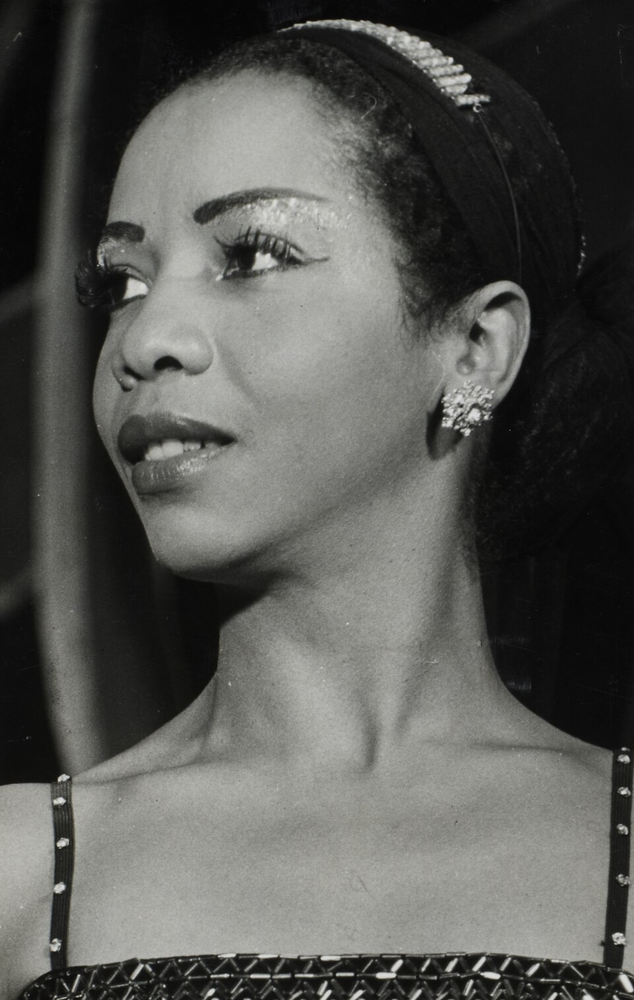
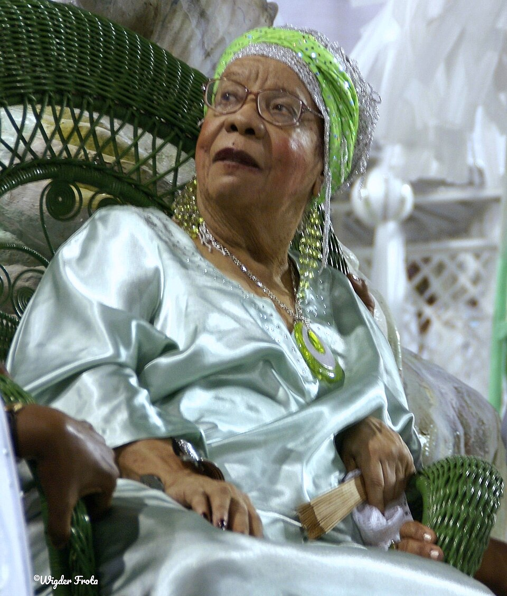
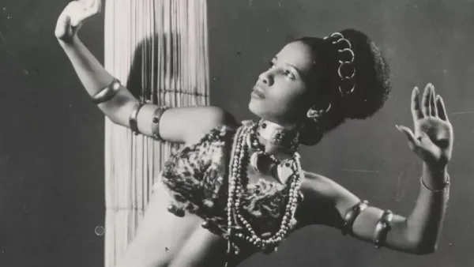
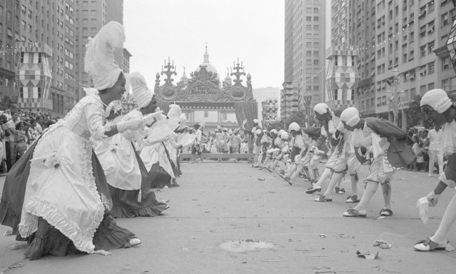
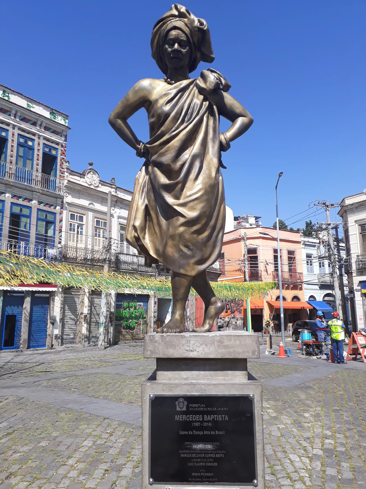

1921
Nasce Mercedes Baptista no Rio de Janeiro, em contexto de segregação racial e desigualdade social. Cresce em família de trabalhadores, onde a arte é vista como forma de transcender limitações impostas pela pobreza e pelo racismo.

“Às vezes é preciso destroçar portas, abrir todas as janelas e decolar para brincar nas estrelas e dançar entre as nuvens.”
Mercedes Baptista
Foto: Acervo O Globo. Reproduzida em https://oglobo.globo.com/cultura/mercedes-baptista-uma-vida-de-resistencia-e-liberacao-na-danca-24608624
Trajetória inicial: origens, formação artística e revolução na dança

Foto: Wigder Frota. Licença: Creative Commons Attribution-Share Alike 4.0.
Mercedes Baptista nasceu no Rio de Janeiro em 1921, filha de uma família de classe trabalhadora. Desde a infância, demonstrou talento natural para a dança, mas enfrentou barreiras significativas por ser mulher negra em um mundo da dança que era histórica e sistematicamente branco e excludente. Apesar das dificuldades financeiras e discriminação racial, dedicou-se ao estudo da dança clássica, desenvolver técnica rigorosa e uma paixão inabalável pela expressão através do movimento. Sua determinação e talento excepcionais permitiram que ela não apenas aprendesse a dançar em nível profissional, mas que se tornasse uma pioneira, quebrando barreiras que pareciam intransponíveis.
Mercedes Baptista se tornou a primeira bailarina negra a se apresentar no Teatro Municipal do Rio de Janeiro, marco histórico que desafiou o racismo estrutural presente nas instituições artísticas brasileiras. Além de sua carreira como bailarina, fundou sua própria companhia de dança, criando oportunidades para outras bailarinas negras e desenvolvendo trabalhos que incorporavam elementos da dança afro-brasileira com técnicas clássicas de dança europeia. Sua obra não foi apenas artística, mas profundamente política — cada performance era um ato de resistência contra a invisibilidade e a discriminação de artistas negros. Mesmo enfrentando hostilidade, preconceito e dificuldades econômicas, Mercedes perseverou, deixando um legado que transformou a dança brasileira e abriu caminho para gerações de bailarinas negras.
Nasce Mercedes Baptista no Rio de Janeiro, em contexto de segregação racial e desigualdade social. Cresce em família de trabalhadores, onde a arte é vista como forma de transcender limitações impostas pela pobreza e pelo racismo.
Mercedes inicia seus estudos em dança clássica, enfrentando barreiras raciais desde o início. Seu talento excepcional permite que ela continue estudando, mesmo enfrentando discriminação de professores e instituições que resistem a aceitar uma bailarina negra.
Mercedes aprofunda sua formação em dança, desenvolvendo técnica rigorosa e visão artística própria. Começa a participar de apresentações, enfrentando resistência de espaços que não queriam aceitar bailarinas negras, especialmente em papéis principais.
Mercedes Baptista faz história ao ser a primeira bailarina negra a se apresentar no Teatro Municipal do Rio de Janeiro, um dos principais teatros do Brasil. Sua performance quebra barreiras simbólicas e concretas do racismo nas artes.
Fundação de sua própria companhia de dança. Mercedes cria oportunidades para outras bailarinas negras e desenvolve trabalhos que articulam dança clássica com elementos de dança afro-brasileira, criando estética singular e revolucionária.
Mercedes consolida sua carreira como coreógrafa criativa e professora influente. Suas coreografias ganham reconhecimento nacional e internacional. Trabalha para ampliar oportunidades de acesso à dança para pessoas negras.
Mercedes permanece ativa na dança, dedicando-se também ao ensino e à transmissão de conhecimento para novas gerações de bailarinos negros. Sua contribuição à dança brasileira é cada vez mais reconhecida.
Mercedes Baptista falece, deixando um legado transformador na dança brasileira. Seu nome passa a ser sinônimo de resistência artística, excelência técnica e quebra de barreiras raciais nas artes.

Foto: Mercedes Baptista em apresentação — via Acervo de Dança Brasileira
Mercedes Baptista é extraordinária porque usou seu corpo como instrumento de resistência em um momento em que corpos negros eram sistematicamente excluídos dos palcos teatrais mais prestigiosos. Ela não apenas se tornou bailarina em um mundo que a rejeitava, mas se tornou excelente — sua técnica, sua sensibilidade, sua criatividade a tornaram indiscutível. Sua performance no Teatro Municipal não foi apenas um ato pessoal de coragem, foi uma afronta política contra o racismo institucional que havia barrado mulheres negras desses espaços por séculos.
O que torna Mercedes ainda mais notável é que não se contentou em apenas quebrar barreiras para si mesma. Ela fundou sua própria companhia, criando oportunidades para outras bailarinas negras, desenvolvendo coreografias que celebravam a estética negra e que integravam elementos da dança afro-brasileira com técnicas clássicas. Ela provou que era possível criar uma dança que era simultaneamente excelente tecnicamente e profundamente enraizada na cultura negra. Seu trabalho mostrou que a diversidade na dança não era apenas justiça, era uma necessidade artística.
Além disso, Mercedes desafiou a ideia de que corpos negros, especialmente corpos de mulheres negras, não pertenciam aos espaços mais elevados da arte. Ela provou através de sua presença, sua excelência e sua dedicação que pertenciam não apenas como participantes, mas como criadores, líderes e visionários. Seu legado encorajou gerações de bailarinas negras a reivindicar seu lugar no palco e na história da dança. Por tudo isso, Mercedes não é apenas uma bailarina importante, mas uma revolucionária das artes que utilizou a dança como ferramenta de libertação e de transformação social.
Influência sobre dança, representatividade artística e justiça racial nas artes.
O legado de Mercedes Baptista está fundamentalmente inscrito na transformação das artes cênicas brasileiras. Primeiro, ela demonstrou que a excelência artística e a representatividade não são valores em conflito, mas complementares. Seu trabalho provou que incluir artistas negros nos palcos mais prestigiosos não diminui a qualidade artística, mas a enriquece. Segundo, Mercedes consolidou a ideia de que dança negra — aquela que incorpora elementos da cultura afro-brasileira — é tão válida, importante e digna de reconhecimento quanto a dança clássica europeia. Suas coreografias abriram espaço para que a estética negra fosse celebrada nas artes, não apenas tolerada.
Além disso, Mercedes demonstrou o poder transformador de um indivíduo que se recusa a aceitar as limitações impostas pelo racismo. Sua presença no Teatro Municipal em 1951 foi um marco que ecoaria por décadas, inspirando gerações de artistas negros a reivindicarem seus próprios espaços. Seu trabalho como professora e coreógrafa criou oportunidades concretas para outras pessoas negras chegarem às artes. Hoje, Mercedes Baptista é celebrada como pioneira das artes negras brasileiras, sua contribuição cada vez mais reconhecida em instituições culturais, universidades e espaços de ativismo. Seu legado continua inspirando artistas negros a ocuparem espaços de poder e criação nas artes, mostrando que a presença negra na dança — e nas artes em geral — não é apenas um avanço social, mas uma necessidade cultural que enriquece toda a humanidade.
Fotos, apresentações e registros históricos.

Mercedes Baptista em registro histórico de dança afro-brasileira. Primeira bailarina negra do Theatro Municipal do Rio de Janeiro, ela foi pioneira na criação de coreografias para o Salgueiro e teve papel fundamental na valorização da cultura negra nos palcos e no carnaval brasileiro.
Foto: Arquivo Nacional / Correio da Manhã, via Alma Preta.

Comissão de Frente da Acadêmicos do Salgueiro apresenta o minueto no desfile de 1963, no, no Rio de Janeiro. A coreografia marcou uma inovação histórica no carnaval carioca e está ligada ao legado de Mercedes Baptista, que levou elementos da dança clássica e afro-brasileira para a avenida.
Foto: Acervo publicado pelo site Primeiros Negros. Autoria não identificada.

Estátua de Mercedes Baptista, localizada no Largo de São Francisco da Prainha, no Rio de Janeiro. O monumento homenageia a primeira bailarina negra do Theatro Municipal do Rio de Janeiro e reconhece sua importância para a dança afro-brasileira no Brasil.
Foto: Luiza Maia / Revista Galileu.
Livros, artigos e documentos históricos.
Biografia e análise do impacto transformador de Mercedes Baptista nas artes e na luta antirracista brasileira. Link: https://www.amazon.com.br/
Coletânea que inclui análises sobre Mercedes Baptista e outras bailarinas negras que transformaram a dança brasileira. Link: https://www.amazon.com.br/
Análise acadêmica sobre a importância histórica de Mercedes Baptista para a descolonização das artes brasileiras. Link: https://www.jstor.org/
Documentário que retrata a trajetória de Mercedes Baptista, suas performances, sua companhia de dança e seu impacto nas artes brasileiras. Link: https://www.youtube.com/
Artigo com visão geral da vida, carreira e importância de Mercedes Baptista na dança brasileira. Link: https://pt.wikipedia.org/wiki/Mercedes_Baptista
Documentação histórica sobre a apresentação de Mercedes Baptista no Teatro Municipal em 1951 e seu impacto na instituição. Link: https://www.theatromunicipal.rj.gov.br/

Foto: John Mathew Smith / www.celebrity-photos.com, via Wikimedia Commons.
Simbolo da luta contra a segregação racial nos Estados Unidos e referência mundial em coragem civil.
Saiba mais
Imagem: representação de Bartolina Sisa em cédula boliviana — via Banco Central da Bolívia.
Estrategista quilombola cuja resistência ajudou a marcar a luta negra por liberdade no Brasil lorem.
Saiba mais
Imagem: representação de Bartolina Sisa em cédula boliviana — via Banco Central da Bolívia.
Intelectual fundamental para os debates sobre feminismo negro, cultura e desigualdade racial no Brasil.
Saiba mais
Imagem: representação de Bartolina Sisa em cédula boliviana — via Banco Central da Bolívia.
Liderença indigêna e jurista que ampliou a presença dos povos originários nos espaços de decisão.
Saiba mais